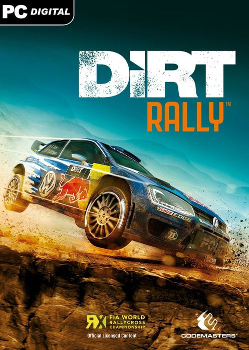

Dirt Rally 1 20.4 GB
Género: Simulador de rally
Dirt Rally es un videojuego de carreras centrado en el rally. Los jugadores
compiten en acontecimientos de etapa cronometrada en asfalto y off-road en
condiciones de tiempo variable
.